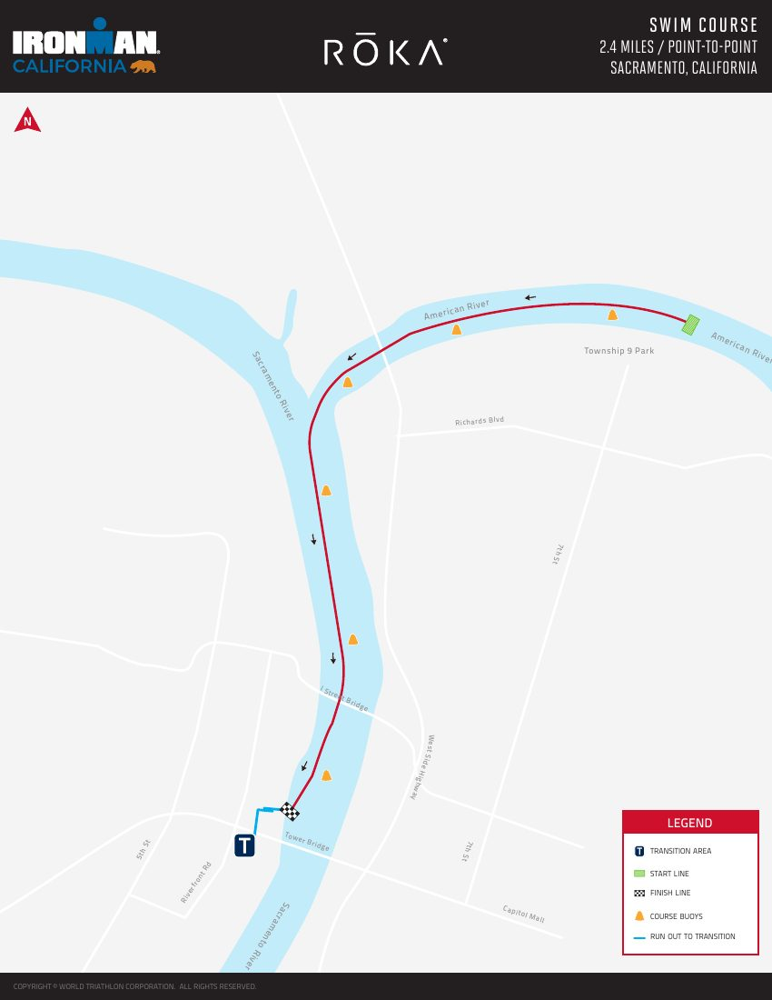
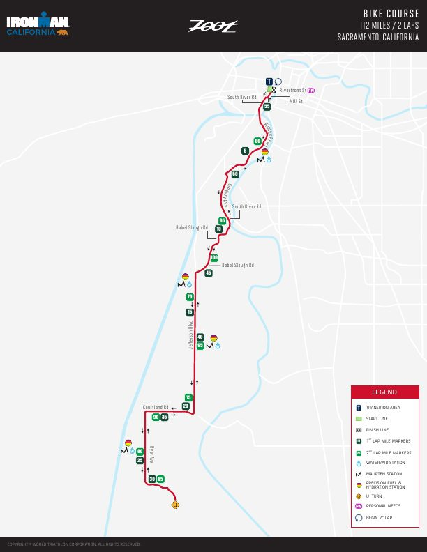
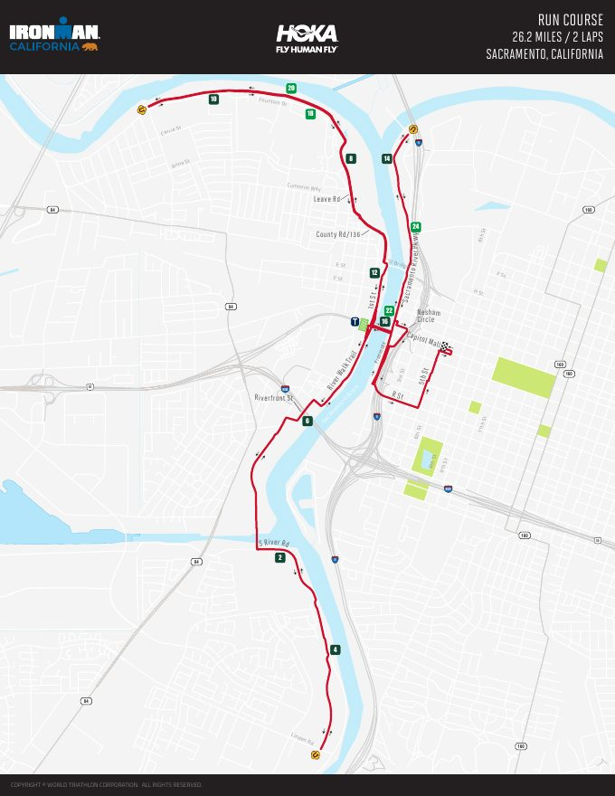

Mon Sep 14, 2026 · 12:00 AM EDT
Live
Oct 24, 2027 · IRONMAN California
Live
This week
Loading…
Quick insights
- Goal = finish under cutoff, enjoyable training (not podium)
- Swim = get through it — continuity over speed
- Meat-forward meals · leftovers for lunch
- Wine OK in moderation · Gatorade/Clif on long sessions
- Weight path 249 → 230 · MFP base 2360
Recent workouts
From DATA · completed first, newest
Workout plan
Phases · week navigator · monthly calendar · standing rules
| Day | Session | Sport | Status |
|---|
Tint = sport · Emerald ring = completed · Today = emerald-600 ring · Click a day for details
Standing rules
- Weekday bike/run at 5:30 AM
- Weekend long sessions at 6:30 AM
- Midday swim at Bow Creek
- Leftovers for lunch · meat-forward dinners
- Wine OK · Gatorade / Clif on long sessions
Sample Foundation week
Workout Progress
Charts from Garmin + planned sessions in DATA
Daily Garmin minutes
Cumulative miles
Planned vs actual minutes
Workout Plan Adherence
Running — cumulative
Minutes (left) · Miles (right)
No sessions yet
Biking — cumulative
Minutes (left) · Miles (right)
No sessions yet
Swimming — cumulative
Minutes (left) · Miles (right)
No sessions yet
Workout log
All planned sessions · Garmin when available · click row for details
| Date | Planned | Sport | Garmin | Min | Dist | Pace | % | Notes |
|---|
No workouts yet.
Nutrition
MyFitnessPal · base goal 2360 · ±50 tolerance · Monday weigh-ins
Calories per day · planned vs actual
Planned = exercise-adjusted MFP goal on training days · base 2360 on rest
Calorie delta (actual − planned)
Weight trend
249 → 230 lb goalMonday AM weigh-ins · baseline seeded; new readings appear as you report them
Course maps
IRONMAN California · Sacramento · subject to change until 2027 maps publish
Course overview
Full-distance IRONMAN: 2.4 mi swim, 112 mi bike, 26.2 mi run through Sacramento and the surrounding valley. Reference maps below are from recent race years (swim/bike 2026, run 2025) and may change for 2027. Official course page: ironman.com/races/im-california/course
Maps subject to change / 2025–26 reference until 2027 maps publish.
Swim

Bike

Run

Sacramento area
OpenStreetMap · Sacramento race venue area